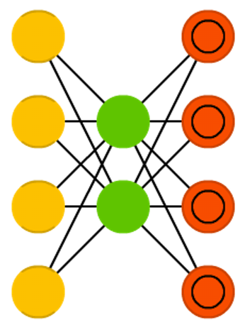
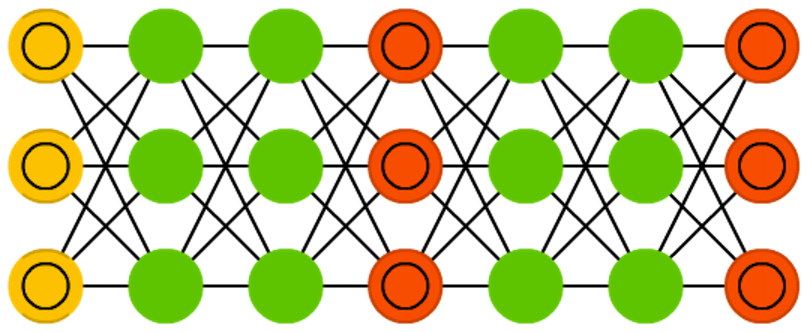
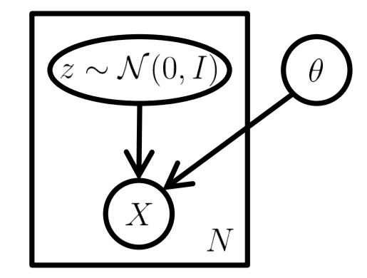

Machine Learning and Neural Networks
Roberto Santana and Unai Garciarena
Department of Computer Science and Artificial Intelligence
University of the Basque Country
Deep Neural Networks: Table of Contents
Autoencoders
Network architecture
-

Figure credit. Neural network zoo.
Characteristics
- Used for unsupervised machine learning.
- The goal of an autoencoder is recovering the input data by learning an internal representation of the input.
- It is comprised of input layer, one or more hidden layers, and one output layer.
- Consists of two parts, an encoder function \( {\bf{h}}=f({\bf{x}}) \) and a decoder that produces a reconstruction \( {\bf{r}}=g({\bf{h}}) \).
I. Goodfellow and Y. Bengio and A. Courville. Deep Learning. Chapter 14. Autoencoders. MIT Press. 2016.
Autoencoders
Network architecture
Figure credit. Neural network zoo.
Characteristics
- The model is forced to prioritize which aspects of the input should be copied.
- It often learns useful properties of the data.
- Traditionally, autoencoders were used for dimensionality reduction or feature learning
- Strong connections between autoencoders and latent models.
- Autoencoders can be trained using the same techniques used for feedforward neural networks.
I. Goodfellow and Y. Bengio and A. Courville. Deep Learning. Chapter 14. Autoencoders. MIT Press. 2016.
Autoencoders
- Autoencoders can be learned in different architectures (e.g., convolutional networks).
- For example, convolutional autoencoders are trained to learn filters able to extract features that can be used to reconstruct the input image.
- The learned representation can be used to pretrain a deeper unsupervised network or a supervised network.
Undercomplete and overcomplete autoencoders
Network architecture
Figure credit. Neural network zoo.
Characteristics
- One way to obtain useful features from the autoencoder is to constrain the encoder \({\bf{h}}\) to have smaller dimension than \({\bf{x}}\).
- An autoencoder whose hidden code dimension is less than the input dimension is called undercomplete.
- When the hidden dimension is greater than the input dimension it is called overcomplete.
I. Goodfellow and Y. Bengio and A. Courville. Deep Learning. Chapter 14. Autoencoders. MIT Press. 2016.
Undercomplete and overcomplete autoencoders
Network architecture
Figure credit. Neural network zoo.
Characteristics
- Undercomplete representation forces the autoencoder to capture the most salient features of the training data.
- The learning process tries to minimize a loss function \( L({\bf{x}},g(f({\bf{x}})))\) where \(L\) is a loss function penalizing \(g(f({\bf{x}}))\) from being dissimilar from \({\bf{x}}\).
- One example of the loss functions used is the mean squared error.
- The capacity of the encoding and decoding functions, whether linear or nonlinear will influence the quality of the reconstruction.
I. Goodfellow and Y. Bengio and A. Courville. Deep Learning. Chapter 14. Autoencoders. MIT Press. 2016.
Regularized autoencoders
Variants of regularized autoencoders
- Sparse autoencoder (SAE): An autoencoder whose training criterion involves a sparsity penalty.
- Denoising autoencoder (DAE):Noise is added to the input \( {\bf{x}} \) to create a noisy or corrupted version \( \tilde{{\bf{x}}} \). The goal of the denoising autoencoder is to learn to recover \( {\bf{x}} \) from \( \tilde{{\bf{x}}} \).
- Contractive autoencoder (CAE): An explicit regularizer is introduced to encourage the derivatives of the encoding function \(f({\bf{x}})\) to be as small as possible.
Characteristics
- Try to adjust the capacity of the encoder and decoder based on the complexity of the data to be modeled.
- Use a loss function that encourages the model to have other properties (e.g., sparsity) besides the ability to copy its input to its output.
- A regularized autoencoder can be nonlinear and overcomplete but still learn something useful about the data distribution.
I. Goodfellow and Y. Bengio and A. Courville. Deep Learning. Chapter 14. Autoencoders. MIT Press. 2016.
Sparse autoencoders
Network architecture
Figure credit. Neural network zoo.
Characteristics
- A sparse autoencoder uses a training criterion that includes a sparsity penalty \( \Omega({\bf{h}}) \) on the code layer \({\bf{h}}\).
- It can be seen as a particular class of regularized autoencoder.
- A loss function with a sparsity penalty: \( L({\bf{x}}, g(f({\bf{x}}))) + \Omega({\bf{h}}) \).
- Sparse autoencoders are typically used to learn features to be used for another ML task.
M. Ranzato, C. Poultney, S. Chorpra and Y. LeCun Efficient learning of sparse representations with an energy-based model. In Advances in neural information processing systems (pp. 1137-1144. 2007.
Denoising autoencoders
Network architecture
Figure credit. Neural network zoo.
Characteristics
- In principle, the goal of the denoising autoencoder is to reconstruct an input that has been corrupted by some sort of noise.
- Othe previous works have proposed to use multi-layer perceptrons for denoising data.
- However, the denoising autoencoder is intended not merely to learn to denoise its input but to learn a good internal representation as a side effect of learning to denoise.
P. Vincent, H. Larochelle, Y. Bengio, and P. A. Manzagol. Extracting and composing robust features with denoising autoencoders. Proceedings of the 25th international conference on Machine learning. Pp. 1096-1103. ACM. 2008.
Denoising autoencoders
Network architecture
Figure credit. Neural network zoo.
Characteristics
- It minimizes the loss function \( L({\bf{x}},g(f({\bf{\tilde{x}}})))\) where \( {\bf{\tilde{x}}} \) is a copy of \({\bf{x}}\) corrupted by some noise.
- DAEs can be seen as multi-layer perceptrons trained to denoise.
- The suitable good internal representation emerges as a byproduct of minimizing the reconstruction error.
- The same loss functions and output unit types that can be used for traditional feedforward networks are also used for denoising autoencoders.
P. Vincent, H. Larochelle, Y. Bengio, and P. A. Manzagol. Extracting and composing robust features with denoising autoencoders. Proceedings of the 25th international conference on Machine learning. Pp. 1096-1103. ACM. 2008.
Denoising autoencoders
Learning algorithm
- Sample a training example \( {\bf{x}} \) from the training data.
- Sample a corrupted version \( {\bf{\tilde{x}}} \) from \( C({\bf{\tilde{x}}}|x= {\bf{x}}) \), where \(C() \) represents a given corruption process.
- Use \(({\bf{x}},{\bf{\tilde{x}}}) \) as a training example for estimating the autoencoder distribution \( p_{reconstruct}({\bf{x}}|{\bf{\tilde{x}}}) = p_{decoder}({\bf{x}}|x= {\bf{h}}) \) with \( {\bf{h}} \) the output of encoder \( f({\bf{\tilde{x}}}) \) and \(p_{decoder}\) typically defined by a decoder \( g({\bf{h}}) \).
I. Goodfellow and Y. Bengio and A. Courville. Deep Learning. Chapter 14. Autoencoders. MIT Press. 2016.
Contractive autoencoders
Penalty on derivative
- As in sparse autoencoders a regularization penalty is used: \[ \begin{equation} L({\bf{x}},g(f({\bf{x}}))) + \Omega({\bf{h}},{\bf{x}}) \end{equation} \]
- But with a different choice of \(\Omega\): \begin{equation} \Omega({\bf{h}},{\bf{x}}) = \lambda \sum_{i} ||\nabla_{{\bf{x}}} h_i||^2 \end{equation}
Characteristics
- The model is forced to learn a function that does not change much when \({\bf{x}}\) changes slightly.
- It has theoretical connections to denoising autoencoders.
- The CAE is contractive only locally, i.e., all perturbations of a training point \({\bf{x}}\) are mapped near to \(f({\bf{x}}) \).
Generative Modeling with DNNs
Network generated faces
Generative modeling
- Generative modeling deals with models of distributions \( p({\bf{x}}) \), defined over datapoints \({\bf{x}} \) in some high-dimensional space \( \mathcal{x}\).
- Since, learning the exact distribution is usually impossible, the goal is then to learn an approximate distribution as accurate as posssible according some metric.
- For an image, the \( {\bf{x}} \) values which look like real images should be given a high probability, whereas images that look like random noise should get low probability.
I. Goodfellow and Y. Bengio and A. Courville. Deep Learning. Chapter 20. Deep Generative Models. MIT Press. 2016.
I. J. Goodfellow et al. Generative Adversarial Nets. arXiv:1406.2661. 2014.
Generative Modeling with DNNs
Network generated faces
Generative modeling
- Instead of computing the probabilities, usually the goal is to produce more examples that are like those already in a database, but not exactly the same.
- More formally, let us suppose we have a dataset of examples \( {\bf{x}} \) distributed according to some unknown distribution \( p_{gt}({\bf{x}}) \).
- The goal is to learn a model \( p({\bf{x}}) \) which we can sample from, such that \( p({\bf{x}}) \) is as similar as possible to \( p_{gt}({\bf{x}}) \).
- Training this type of model has been a long-standing problem in the machine learning community.
C. Doersch. Tutorial on Variational Autoencoders. arxiv.org/pdf/1606.05908.pdf. 2016.
Generative Modeling with DNNs
Methods based on DNNs
- Recent work have made tremendous progress in training neural networks as powerful function approximators through backpropagation.
- Generative Adversarial Networks (GANs)
- Variational AutoEncoders (VAEs)
- Boltzmann machines and RBMs
- Deep Belief Networks
Problems with traditional methods
- They (e.g., graphical models) might require strong assumptions about the structure in the data.
- They might make severe approximations, leading to suboptimal models.
- They might rely on computationally expensive inference procedures like Markov Chain Monte Carlo.
C. Doersch. Tutorial on Variational Autoencoders. arxiv.org/pdf/1606.05908.pdf. 2016.
Generative Adversarial Networks (GANs)
Network architecture
-

Characteristics
- One of the most extensively applied generative models.
- It can be defined for different types of neural networks. What is common is the principle used and the model components.
- The model contains two sub-networks, one generator \(G \) and one discriminator \(D \).
I. J. Goodfellow et al. Generative Adversarial Nets. arXiv:1406.2661. 2014.
Generators: GANs
Characteristics
- The model contains two sub-networks, one generator \(G \) and one discriminator \(D \).
- The goal of the generator is to generate ouputs that look as similar as possible to solutions from the input space.
- The goal of the discriminator is to learn to discriminate between ouputs generated by \(G \) and true solutions from the input space.
- The objective of GANs is to learn realistic generative models of high-dimensional data.
Generators: GANs
Generative Adversarial Networks (GANs)

S. Kundert.Image Credit. Generative Adversarial Networks. 2017.
Generative Adversarial Networks (GANs)
- Generative adversarial nets are trained by simultaneously updating the discriminative distribution (D, blue, dashed line) so that it discriminates between samples from the data generating distribution (black, dotted line) \( p_{\bf{x}} \) from those of the generative distribution \( p_g(G) \).
I. J. Goodfellow et al. Generative Adversarial Nets. arXiv:1406.2661. 2014.
Generative Adversarial Networks (GANs)
- One of the goals is to learn the generator's distribution \( p_g \) over data \( {\bf{x}}\).
- To do this a prior on input noise variables \(p_z ({\bf{z}})\) is defined
- A mapping to data space \({\bf{\tilde{x}}} = G({\bf{z}}, \theta_g)\) is also defined where \( G \) is a differentiable function represented by a multilayer perceptron with parameters \( \theta_g \).
I. J. Goodfellow et al. Generative Adversarial Nets. arXiv:1406.2661. 2014.
Generative Adversarial Networks (GANs)
- A second multi-layer perceptron \(D({\bf{x}}, \theta_d)\) is also defined.
- \(D({\bf{x}}, \theta_d)\) outputs a scalar and represents the probability that \( {\bf{x}} \) from the data rather than \( p_g \) .
- \(D \) and \(G \) play the following two-player minimax game with value function \(V(D,G) \):
\[ \min_G \max_D \; V(D,G) = \mathbb{E}_{{\bf{x}} \sim p_{data}({\bf{x}})} \left [ \log(D({\bf{x}})) \right ] + \mathbb{E}_{{\bf{z}} \sim p_{\bf{z}}({\bf{z}})} \left[ \log(1-D(G({\bf{z}})) \right] \]
I. J. Goodfellow et al. Generative Adversarial Nets. arXiv:1406.2661. 2014.
Generative Adversarial Networks (GANs)
- One of the goals is to learn the generator's distribution \( p_g \) over data \( {\bf{x}}\).
- To do this a prior on input noise variables \(p_z ({\bf{z}})\) is defined
- A mapping to data space \({\bf{\tilde{x}}} = G({\bf{z}}, \theta_g)\) is also defined where \( G \) is a differentiable function represented by a multilayer perceptron with parameters \( \theta_g \).
- A second multi-layer perceptron \(D({\bf{x}}, \theta_d)\) is also defined.
- \(D({\bf{x}}, \theta_d)\) outputs a scalar and represents the probability that \( {\bf{x}} \) from the data rather than \( p_g \) .
- \(D \) and \(G \) play the following two-player minimax game with value function \(V(D,G) \):
\[ \min_G \max_D V(D,G) = \mathbb{E}_{{\bf{x}} \sim p_{data}({\bf{x}})} [log(D({\bf{x}}))] + \mathbb{E}_{{\bf{z}} \sim p_{\bf{z}}({\bf{z}})} [log(1-D(G({\bf{z}}))] \]
I. J. Goodfellow et al. Generative Adversarial Nets. arXiv:1406.2661. 2014.
Generative Adversarial Networks (GANs)
- The training criterion for the discriminator \(D\), given any generator \(G\) is to maximize the quantity \( V(G,D) \):
\[ \begin{align} V(D,G) =& \int_{\bf{x}} p_{data}({\bf{x}}) \log(D({\bf{x}})) dx + \int_{{\bf{z}}} p_{\bf{z}}({\bf{z}}) \log(1-D(G({\bf{z}})) dz \\ =& \int_{\bf{x}} p_{data}({\bf{x}}) \log(D({\bf{x}})) + p_g({\bf{x}}) \log(1-D({\bf{x}})) dx \end{align} \]
I. J. Goodfellow et al. Generative Adversarial Nets. arXiv:1406.2661. 2014.
Generative Adversarial Networks (GANs)
I. J. Goodfellow et al. Generative Adversarial Nets. arXiv:1406.2661. 2014.
Generative Adversarial Networks (GANs)
I. J. Goodfellow et al. Generative Adversarial Nets. arXiv:1406.2661. 2014.
Generative Adversarial Networks (GANs)
Problems
- There is no explicit representation of \(p_g({\bf{x}})\).
- \(D\) must be synchronized well with \( G \) during training (in particular, \(G\) must not be trained too much without updating \(D \) ).
- \(G\) can collapse too many values of \( {\bf{z}} \) to the same value of \( {\bf{x}} \).
Advantages
- Markov chains are not needed.
- Only backpropagation is used to obtain gradients.
- No inference is needed during learning.
- A wide variety of functions can be incorporated into the model.
Generative Adversarial Networks (GANs)

- Example of the use of GAN: make artwork for 8-bit video games!.
A. Geitgey. Machine Learning is Fun Part 7: Abusing Generative Adversarial Networks to Make 8-bit Pixel Art. 2017.
Generative Adversarial Networks (GANs)

- Important question: Which is the input space?
A. Geitgey. Machine Learning is Fun Part 7: Abusing Generative Adversarial Networks to Make 8-bit Pixel Art. 2017.
Generative Adversarial Networks (GANs)

- Important question: Get some data!
A. Geitgey. Machine Learning is Fun Part 7: Abusing Generative Adversarial Networks to Make 8-bit Pixel Art. 2017.
Generative Adversarial Networks (GANs)

- Learn the GAN.
A. Geitgey. Machine Learning is Fun Part 7: Abusing Generative Adversarial Networks to Make 8-bit Pixel Art. 2017.
Generative Adversarial Networks (GANs)

- Last step: Use the tiles generated by the GAN to create a new game.
A. Geitgey. Machine Learning is Fun Part 7: Abusing Generative Adversarial Networks to Make 8-bit Pixel Art. 2017.
Generative modeling
Generators: GANs
- GAN Application: Approximating Pareto sets in multi-objective problems.
- The shapes of the Pareto fronts are usually intricate.
- We want to approximate these shapes using GANs.
U. Garciarena, R. Santana, A. Mendiburu. Evolved GANs for generating Pareto set approximations. Proceedings of the Genetic and Evolutionary Computation Conference. Pp 434-441. Kyoto. Japan. 2018.
- GANs are able to learn the approximations for bi-objective functions.
- We can simultaneously search for architectures and evaluate their accuracy to approximate the Pareto sets.
- Other potential applications are possible in optimization.
U. Garciarena, R. Santana, A. Mendiburu. Evolved GANs for generating Pareto set approximations. Proceedings of the Genetic and Evolutionary Computation Conference. Pp 434-441. Kyoto. Japan. 2018.
Variational autoencoders
Network architecture

Figure credit. Neural network zoo.
Characteristics
- As traditional autoencoders they can be split into two components: an encoder and a decoder.
- They are probabilistic autoencoders since their outputs are partly determined by chance (as oppossed to DAEs which use randomness only during training).
- They can generate new instances that look like if they were sampled from the training set (generative autoencoders).
- Similar to RBMs, but they are easier to train and the sampling process is much faster.
A. Geron. Hands-On Machine Learning with Scikit-Learn and TensorFlow. Concepts, Tools, and Techniques to Build Intelligent Systems. O'Reilly. 2017.
D. P. Kingma and M. Welling. Auto-encoding variational Bayes. arXiv preprint arXiv:1312.6114. 2013.
Learning latent distributions
- Learning a distribution of images that belong to the same class can be difficult.
- In the example above, the second image (b) is a corrupted version of the first image (a). The third image (c) is identical but it has been shifted two pixels.
- Thinking of a way to detect this type of similarity given a wide range of transformations is difficult.
C. Doersch. Tutorial on Variational Autoencoders. arxiv.org/pdf/1606.05908.pdf. 2016.
Variational autoencoders
Latent representation
- In some highly complex input domains (e.g., image analysis), assuming a latent representation can help to model the problem.
- Latent space: We assume that the distribution over the observed variables \({\bf{z}} \;\) is the consequence of a distribution over some set of hidden variables \({\bf{z}} \sim p({\bf{z}}) \).
- Inference is the process of disentangling these rich real-world dependencies into simplified latent dependencies, by predicting \(p({\bf{z}}|{\bf{x}})\).
C. Doersch. Tutorial on Variational Autoencoders. arxiv.org/pdf/1606.05908.pdf. 2016.
Variational autoencoders

Latent representation in VAE
- Latent variable \( {\bf{z}} \) is distributed as a multivariate normal with mean \( \mu \) and diagonal covariance values \( \sigma^2 \).
- The parameters of the distribution are directly parameterized by the encoder: \( \mathcal{N}(\mu,\sigma^2\, I) \).
- The encoder produces a mean coding \( \mu \) and a standard deviation \( \sigma \)
M. Shiffman. Under the Hood of the Variational Autoencoder (in Prose and Code). 2016.
C. Doersch. Tutorial on Variational Autoencoders. arxiv.org/pdf/1606.05908.pdf. 2016.
Variational autoencoders
-

Latent representation in VAE
- In the decoder phase, a sampled \( {\bf{z}} \) is passed to the decoder/generative network.
- The decoder uses the learned conditional distribution over input space to reconstruct an input according to \(\tilde{\bf{x}} \sim p_{\theta}({\bf{x}}|{\bf{z}})\).
- The actual coding is sampled from the Gaussian distribution with the learned parameters.
- The key idea behind the variational autoencoder is to attempt to sample values of \({\bf{z}}\) that are likely to have produced \({\bf{x}}\), and compute \( p({\bf{x}})\) just from those.
M. Shiffman. Under the Hood of the Variational Autoencoder (in Prose and Code). 2016.
C. Doersch. Tutorial on Variational Autoencoders. arxiv.org/pdf/1606.05908.pdf. 2016.
Variational autoencoders
Network architecture
Interpretation
- The encoder maps observed inputs to (approximate) posterior distributions over latent space.
- The decoder works as a generative network. It maps arbitrary latent coordinates back to distributions over the original data space.
- The latent variable model can be seen as a probability distribution \(p(x|z)\) describing the generative process (of how \( x \) is generated from \(z\) ).
C. Doersch. Tutorial on Variational Autoencoders. arxiv.org/pdf/1606.05908.pdf. 2016.
D. P. Kingma and M. Welling. Auto-encoding variational Bayes. arXiv preprint arXiv:1312.6114. 2013.
VAE components
M. Shiffman. Under the Hood of the Variational Autoencoder (in Prose and Code). 2016.
Reparametrization trick
C. Doersch. Tutorial on Variational Autoencoders. arxiv.org/pdf/1606.05908.pdf. 2016.
Variational autoencoders loss function
- VAEs may be trained by maximizing the variational lower bound \( \mathcal{L}(q)\) associated with data point.
- \[ \mathcal{L}(q) = \mathbb{E}_{{\bf{z}}\sim q({\bf{z}}|{\bf{x}})} \log p_{model}({\bf{x}}|{\bf{z}}) - D_{KL} (q({\bf{z}}|{\bf{x}})||p_{model}({\bf{z}})) \]
I. J. Goodfellow et al. Generative Adversarial Nets. arXiv:1406.2661. 2014.
Variational autoencoders (manifolds)
- In machine learning, a manifold can serve to capture in a low dimensional space characteristics of the data in the high dimensional space.
- In contrast to PCA and other methods, the manifold learning can provide more powerful non-linear dimensionality reduction by preserving the local structure of the input data.
- The usability of manifolds can be measured in terms of their ability to capture variability accross the data and in terms of their generative capability.
- Manifold learning has mostly focused on unsupervised learning procedures that attempt to capture these manifolds.
E. Park. Manifold Learning with Variational Auto-encoder for Medical Image Analysis. Semantic Scholar.
Variational autoencoders (manifolds)
- Manifold in a 2-d latent space.
I. Goodfellow and Y. Bengio and A. Courville. Deep Learning. Chapter 20. Deep Generative Models. MIT Press. 2016.
Variational autoencoders (manifolds)
- Visualization of 2d manifold space for MRI data.
E. Park. Manifold Learning with Variational Auto-encoder for Medical Image Analysis.Semantic Scholar
Variational autoencoders (manifolds)
- T-SNE visualization of learned high dimensional manifold space.
E. Park. Manifold Learning with Variational Auto-encoder for Medical Image Analysis. Semantic Scholar.
Variational autoencoders (extensions)
- VAEs are extended to consider additional, functionally dependent variables as inputs.
- The application domain is also multi-objective optimization.
U. Garciarena, R. Santana, A. Mendiburu. Variational autoencoder for learning and exploiting latent representations in search distributions. Proceedings of the Genetic and Evolutionary Computation Conference. Pp 849-856. Kyoto. Japan. 2018.
Variational autoencoders
- Implementation of the Extended VAE
U. Garciarena, R. Santana, A. Mendiburu. Variational autoencoder for learning and exploiting latent representations in search distributions. Proceedings of the Genetic and Evolutionary Computation Conference. Pp 849-856. Kyoto. Japan. 2018.
Variational autoencoders
- Implementation of the Conditionally Extended VAE
U. Garciarena, R. Santana, A. Mendiburu. Variational autoencoder for learning and exploiting latent representations in search distributions. Proceedings of the Genetic and Evolutionary Computation Conference. Pp 849-856. Kyoto. Japan. 2018.